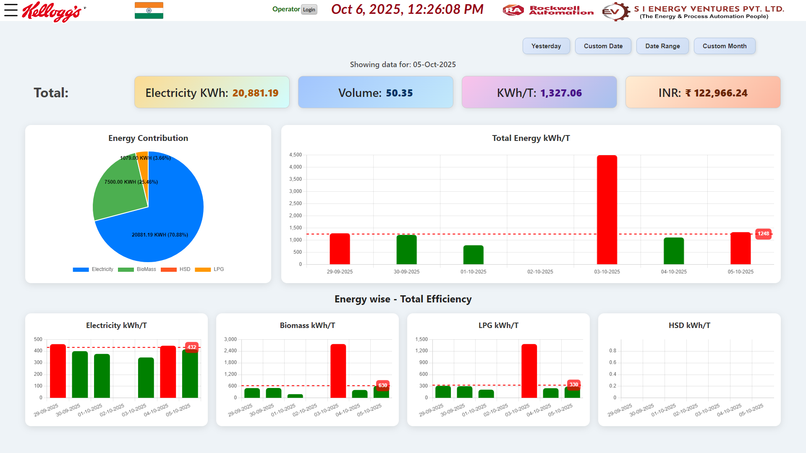
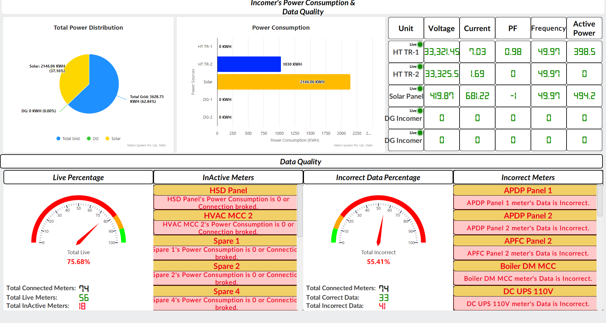
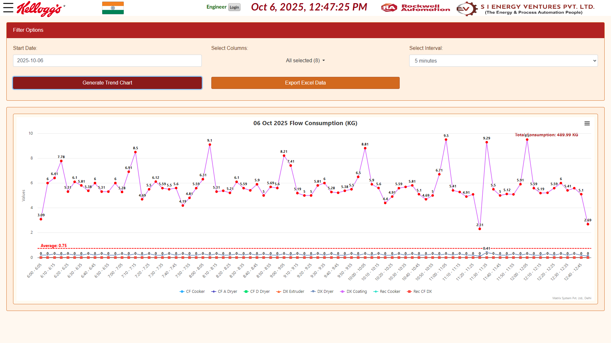
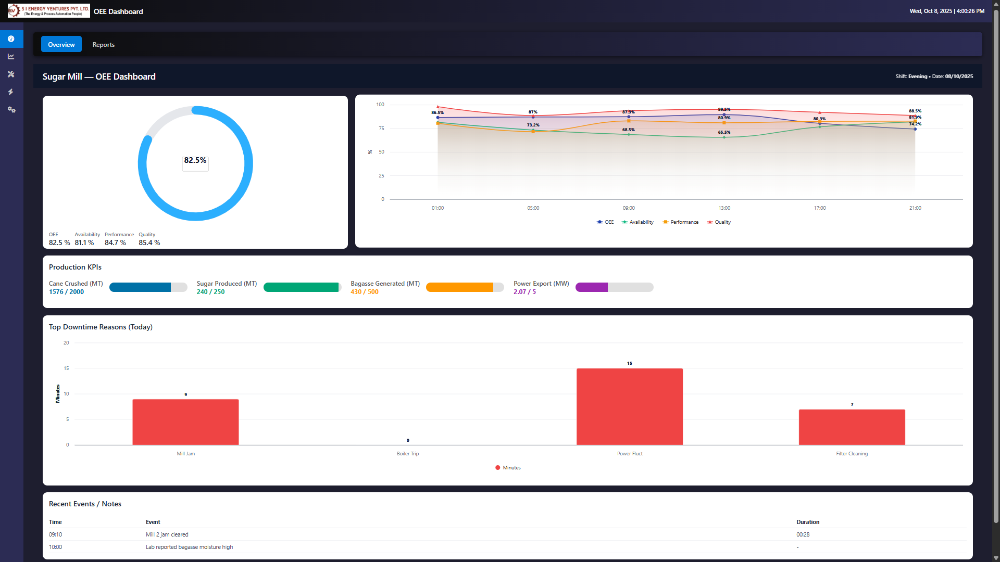
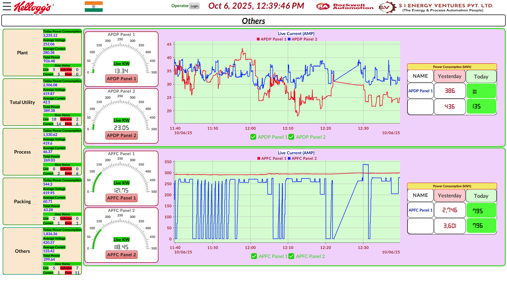

Sujay Hazra
Email: hazrassujay@gmail.com |
Phone: +91 87955 72515 |
Location: Ayodhya, India
Professional Summary
IT Engineer with 3+ years of experience in industrial automation, web dashboard development, PLC logic (CCW/RSLogix 500), FT Optix HMI, Python, SQL, and C#. Skilled in designing dynamic dashboards, automation solutions, and interactive project monitoring with a focus on efficiency and scalability.
Skills
C# 90%
SQL 88%
Python 85%
PLC / Allen Bradley 82%
Web Development 80%
Experience
Software Developer|Automation Engineer
S. I. Energy Ventures Pvt. Ltd., Delhi
Jul 2022 – Present
- Designed and implemented industrial dashboards using FT Optix HMI.
- Developed PLC logic in CCW and RSLogix 500 for control systems.
- Created real-time data acquisition pipelines using C# and SQL.
- Built OEE and production monitoring dashboards for flaking, rotary ovens, and extruders.
- Developed Excel and web-based reporting solutions for production & energy monitoring.
- Automated data analysis and reporting using Python & SQL.
- Enhanced web apps with responsive dashboards for industrial clients.
- Learned Allen Bradley PLC programming (CCW & RSLogix 500).
- Assisted in creating FT Optix HMI dashboards.
- Participated in industrial automation project simulations.
Projects
Energy Dashboard
Interactive web dashboard showing real-time energy metrics from industrial equipment using SQL & C# backend.
Tech: C#, SQL, JS, HTML/CSS

PLC Automation
Automated industrial process control and monitoring using Allen Bradley PLCs & FT Optix HMI dashboards.
Tech: PLC CCW, RSLogix 500, FT Optix

Data Analytics Tool
Python & SQL-based analytics tool for processing large industrial datasets, generating actionable insights.
Tech: Python, SQL, Pandas, Matplotlib

Web Reporting Dashboard
Developed interactive web reporting dashboards for production and energy monitoring, with Excel export functionality.
Tech: C#, ASP.NET, SQL, HTML/CSS

OEE Monitoring Dashboard
Created Overall Equipment Effectiveness dashboard showing production KPIs, uptime, and efficiency.
Tech: C#, SQL, JS, HMI Integration

FT Optix HMI Project
Developed human-machine interface dashboards for industrial machines with real-time monitoring and alarm system.
Tech: FT Optix, PLC Integration, C#

RSLogix 500 Logic Development
Created and tested basic PLC logic programs for production line control and motor automation.
Tech: RSLogix 500, Allen Bradley PLC